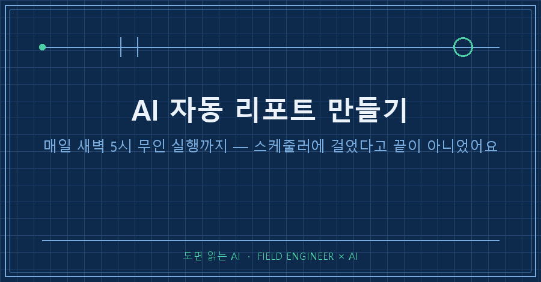
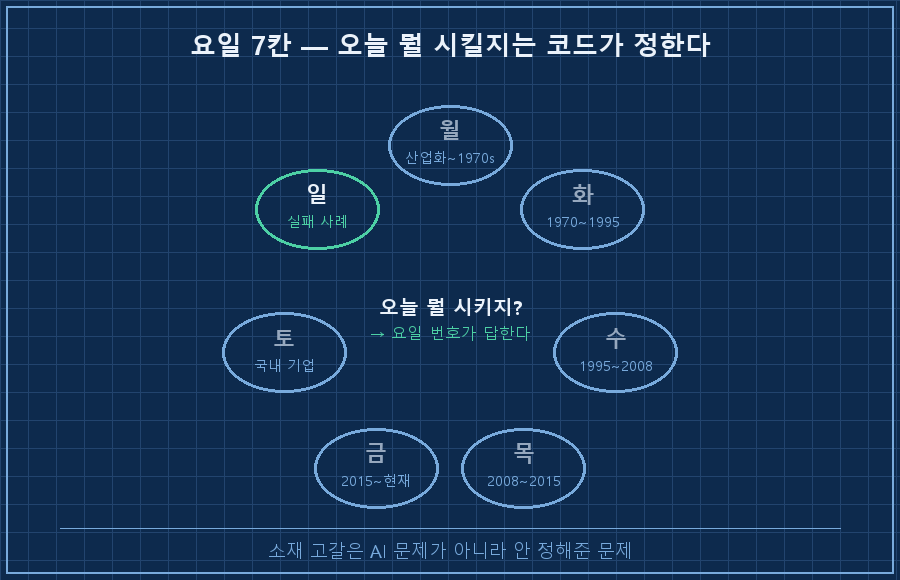
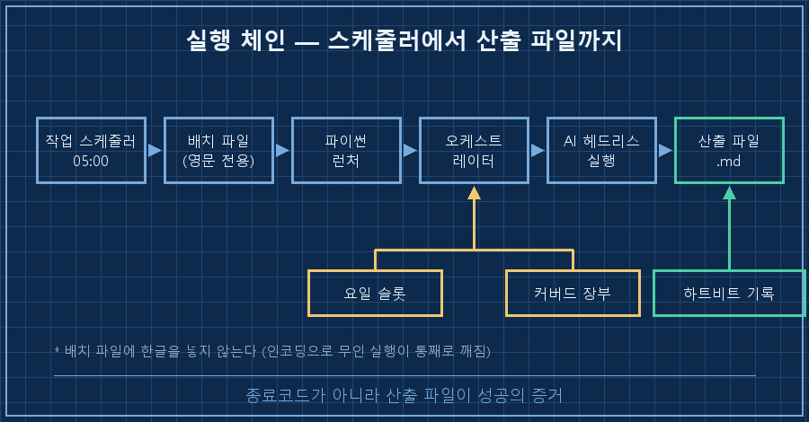
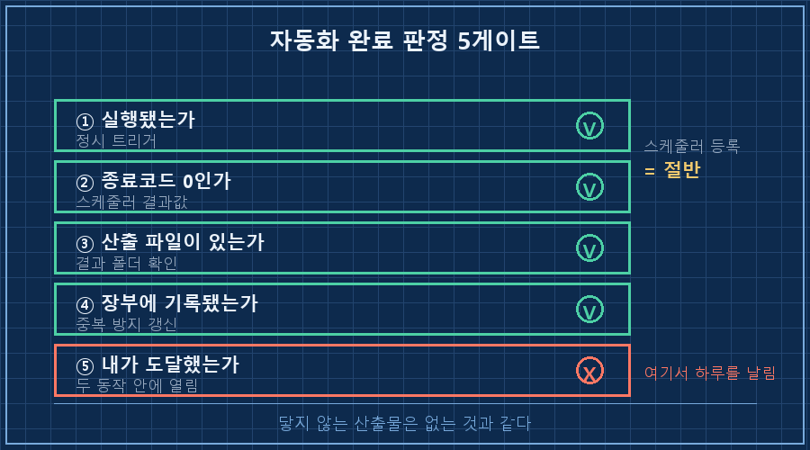

"이거 안 돌아가는 것 같은데?"
어제 아침에 제가 저한테 한 말이에요.
AI 자동 리포트 만들기를 해보겠다고 새벽 5시에 스케줄을 걸어둔 지 이틀째였는데, 그날 아침엔 아무것도 안 온 것 같았거든요.
로그를 열어보니 멀쩡히 돌았더라고요. 5시 정각에 시작해서 4분 39초 만에 파일까지 저장했고요.
없던 건 리포트가 아니라, 제가 그 리포트까지 가는 길이었습니다.
AI 자동 리포트 만들기에서 진짜 관문은 프롬프트가 아니라 게이트 다섯 개예요. ①매일 시킬 주제가 안 마르게 ②같은 걸 두 번 안 하게 ③두 번 돌아도 안전하게 ④종료코드 말고 산출 파일로 성공을 판정하게, 그리고 ⑤사람이 그 결과에 도달하게. 앞의 넷은 코드로 막히는데, 저는 다섯 번째에서 하루를 날렸습니다.
제 밥벌이는 사람이 지켜보지 않는 시간에도 설비가 제 할 일을 하게 만드는 쪽이에요. 열다섯 해쯤 됐네요.
무인으로 뭘 돌릴 때 제일 먼저 정하는 건 항상 똑같습니다. "돌았다"를 뭘로 판정할 것이냐요.
이번엔 그 버릇을 회사 일이 아니라 제 개인 공부에 붙여봤어요.
전제부터 적어둘게요. 2026년 8월 기준, 윈도우 PC 한 대, 파이썬 3, 터미널에서 헤드리스로 돌아가는 AI 코딩 도구(-p 옵션), 윈도우 작업 스케줄러. 서버는 없습니다.
1. 매일 시킬 거리부터 안 마르게 만들었어요
AI 자동 리포트 만들기를 "매일 사례 하나씩 조사해서 정리해줘"로 시작하면 사흘이면 비슷한 얘기가 돌아옵니다.
그래서 주제를 고르는 일 자체를 요일에 나눠 박아버렸어요.

코드로는 사전 하나가 전부입니다. 요일 번호로 그날 문장을 꺼내 프롬프트에 끼워 넣어요.
SLOTS = {0: "고전 시대(산업화~1970년대)에 무에서 시작한 기업",
# ... 요일별 시대 슬롯 ...
6: "실패 사례 — 무에서 유를 만들다가 무너진 기업"}
slot = SLOTS[datetime.date.today().weekday()]일요일 칸을 실패 사례로 잡은 게 개인적으로는 제일 마음에 들어요. 성공담만 쌓이면 그건 그냥 위인전이 되더라고요..
2. 같은 걸 또 하지 않게, 장부를 프롬프트에 실었습니다
AI는 어제 뭘 했는지 기억을 못 해요. 매일 새 사람이 출근하는 셈입니다.
그래서 이미 다룬 대상 이름을 텍스트 파일 한 장에 계속 덧붙이고, 실행할 때마다 그 목록을 프롬프트에 통째로 밀어 넣었어요. "아래 목록의 대상은 절대 선택 금지" 한 줄이랑 같이요.
기억을 모델이 아니라 파일이 갖게 하는 구조예요.
자동화에서 제일 싸게 먹히는 부품이 이거였습니다. 텍스트 한 장이면 되거든요!
3. 성공 판정을 종료코드에서 산출 파일로 옮겼어요
여기가 제일 중요한 대목이에요.
작업 스케줄러는 프로그램이 끝나기만 하면 결과값 0을 찍어줍니다. AI가 사과문 한 줄만 쓰고 끝나도 0이에요.
그래서 성공 판정을 파일 존재로 바꿨습니다. 프롬프트 맨 끝에 저장 규약부터 못 박았어요.
[저장 지시]
- 완성된 리포트를 Write 도구로 저장하라: {폴더}\{날짜}_대상명.md
- 저장 후 마지막 줄에 정확히 출력하라: SAVED: <저장한 절대경로>SAVED 한 줄은 사람으로 치면 서명이에요. "했습니다"가 아니라 "어디에 뒀습니다"를 받아내는 장치죠.
그리고 파이썬 쪽에서 그날 날짜로 시작하는 파일이 실제로 생겼는지 확인합니다.
def todays_file():
hits = glob.glob(os.path.join(CASES, f"{TODAY}_*.md"))
return hits[0] if hits else None없으면 한 번 더 돌리고, 그래도 없으면 실패로 기록하고 죽게 했어요.
이 함수가 덤으로 멱등 스킵까지 해줍니다. 실행 순간 오늘 파일이 이미 있으면 그냥 건너뛰어요. 수동으로 한 번 더 눌러도 사고가 안 납니다.
06:21:28 멱등 스킵 — 당일 파일 존재: 2026-08-08_○○○.md
06:21:28 [HEARTBEAT] SKIP 2026-08-08_○○○.md
4. 다 초록불인데, 왜 안 돌아가는 것 같았을까요
이틀째 아침에 남은 로그가 이겁니다.
05:00:02 === 데일리 리포트 시작 (2026-08-09, 요일 슬롯 6) ===
05:00:02 헤드리스 AI 호출 (최대 20분)...
05:04:41 | SAVED: ...\사례\2026-08-09_○○○.md
05:04:41 커버드 장부 추가: ○○○
05:04:42 [HEARTBEAT] OK ○○○ (로컬+미러)정시 실행, 4분 39초, 파일 생성, 장부 기록, 미러까지 전부 통과였어요.
그런데 저는 그날 아침에 "안 돌아간다"고 판단했습니다.
이유가 좀 허무해요. 열람용으로 보내둔 미러 페이지가 폴더 네 단계 안쪽에 있었거든요.
결과물은 멀쩡히 거기 있었고, 제 손가락이 거기까지 안 갔던 겁니다..
그래서 게이트를 하나 더 붙였어요. 도달 게이트.
산출물이 내 눈에 닿기까지 몇 동작이 필요한가. 두 동작을 넘으면 그 자동화는 없는 거나 마찬가지더라고요.
반나절 걸린 진단의 처방이 고작 즐겨찾기 하나였어요!

| 게이트 | 뭘 보는가 | 통과 기준 |
|---|---|---|
| 1 주제 고갈 | 요일 슬롯 | 7일치가 서로 다른가 |
| 2 중복 | 장부 파일 | 프롬프트에 실려 들어가는가 |
| 3 재실행 | 수동으로 한 번 더 | 스킵 로그가 찍히는가 |
| 4 산출물 | 결과 폴더 | 종료코드 말고 파일로 판정 |
| 5 도달 | 즐겨찾기·알림 | 두 동작 안에 열리는가 |
자주 나오는 질문 셋
Q. 스케줄러에 등록만 해두면 알아서 돌아가지 않나요?
등록은 절반이에요. 저는 수동 실행 성공 → 스케줄러 등록 → 스케줄러로 실구동해서 결과값 0 확인 → 실제 산출물 눈으로 확인, 이 순서를 다 밟고 나서야 가동으로 칩니다. 화면엔 성공이라고 떠 있는데 안에서는 아무것도 안 만들어져 있던 경우를 몇 번 봤거든요.
Q. 실행용 배치 파일에 한글을 넣어도 되나요?
안 넣는 걸 권합니다. 저는 배치 파일은 영문만 쓰고, 한글이 섞인 경로는 파이썬 런처가 받아서 넘기게 분리해뒀어요. 배치 파일 인코딩 하나 때문에 무인 실행이 통째로 깨진 적이 있어서 생긴 습관입니다.
Q. AI가 지어낸 내용이 매일 쌓이면 위험하지 않나요?
그래서 프롬프트에 세 가지를 박아뒀어요. 출처 URL 명기, 모든 수치에 [확정]/[추정] 표시, 확인 못 한 건 "미확인"으로 남기기. 그래도 무인 산출물은 초안 지위예요. 중요한 판단의 근거로 쓸 땐 따로 검증하고 씁니다.
"돌아가는가"는 코드가 답을 해줘요.
근데 "내가 그걸 보는가"는 코드가 답을 안 해주더라고요. 이건 사람 쪽 배선이라서요.
혹시 지금 잘 돌고 있는데 한 번도 열어본 적 없는 자동화, 하나쯤 갖고 계시지 않나요?
다음엔 이렇게 쌓이기만 하고 안 읽히는 결과물을 어떻게 줄여봤는지 써볼게요.
무인으로 돌려본 것들의 게이트 목록과 실패 로그는 makefield.ai 쪽에 따로 모아뒀으니, 비슷한 걸 만들 계획이면 그거부터 보시면 됩니다.
---
현장 엔지니어를 위한 AI 도입·자동화 문의: makefield.ai
태그: #AI자동리포트만들기 #AI자동화 #작업스케줄러자동실행 #무인자동화 #클로드코드 #AI에이전트 #헤드리스AI #파이썬자동화 #자동화검증 #매일자동리포트 #AI공부자동화 #업무자동화 #AI활용법 #현장엔지니어 #도면읽는AI